About
Still-Light is a trauma-informed digital experience centered on presence, softness, and emotional safety. Rather than guiding users through actions or decisions, it offers a quiet environment designed for stillness, reflection, and gentle connection.
The experience is intentionally minimal and non-directive. There are no expectations to respond, explain, or engage in a specific way. Instead, Still-Light creates space for users to simply exist as they are, supported without pressure and accompanied without demand.
The Why
This project comes from a deeply personal understanding of what it means to need support, but not be ready to seek it. In those moments, traditional systems, no matter how helpful, can feel distant, overwhelming, or difficult to access.
Still-Light was created to hold that space differently. To affirm, to support, and to quietly acknowledge what may be difficult to name. Not by asking more of the user, but by offering less, less pressure, less expectation, and more room to simply be.
Answering a Problem
Halfway through the MAGWD program, I knew I wanted to focus on supporting survivors of trauma, specifically survivors of sexual assault (SA) and childhood sexual abuse (CSA).
My initial concept explored a platform centered around trauma therapy. But as I developed the idea further, I chose to shift direction. I didn’t want to recreate systems that already exist, especially when many platforms already offer resources, guidance, and intervention effectively.
That realization reframed the problem. If support systems are designed for action, what exists for the moment before action?
What does an environment look like where the user isn’t expected to do anything, but still feels supported?
That question became the starting point for Still-Light—a space designed to support without expectation.
Rather than guiding users toward action or resolution, the intention became something quieter: to create an environment where presence itself is enough. From that point forward, each design decision was shaped not by what the user should do, but by what they might need in a moment where doing feels like too much.
This approach took form through three core principles:
Presence over performance
Still-Light does not ask the user to engage, respond, or share. There are no prompts requiring input, no expectations to participate. The space exists with or without interaction, allowing the user to remain entirely passive if they choose.
Choice without pressure
Navigation is open and non-linear. There are no required paths, no progress indicators, and no defined endpoints. Users may move freely through the experience—or not at all—without consequence or expectation.
Emotional safety through design
Every element within Still-Light is intentionally restrained. Soft gradients, slow transitions, minimal language, and subtle motion work together to reduce cognitive load. The goal is not to capture attention, but to gently hold it.
Rather than guiding users toward a specific outcome, Still-Light holds space for whatever they bring with them—whether that is restlessness, grief, numbness, or stillness.
It is not a tool to fix, diagnose, or improve.
It is a space to simply be.
The Process
Still-Light did not emerge as a fully formed idea. The project evolved from an earlier project called Quiet Gathering, a digital environment designed to offer comfort and connection without demanding participation from the user. What began as a smaller experiment gradually became a deeper investigation into emotional design, accessibility, and trauma-informed digital experiences.
The Still-Light environment evolved through multiple phases of research, conceptualizing, prototyping, testing, and technical implementation. Each iteration brought challenges and revealed new design avenues, shaping the journey and ultimately influencing the development of Still-Light.
Before creating any visual designs, I spent time reflecting on what the experience could offer and what role it might play for the user. I explored a small number of trauma-informed websites and mindfulness applications, using them as reference points for tone, visual design, and user experience. While these examples helped inform my thinking, the goal was not to replicate existing solutions, but to better understand how an online environment could feel calm, welcoming, and accessible.
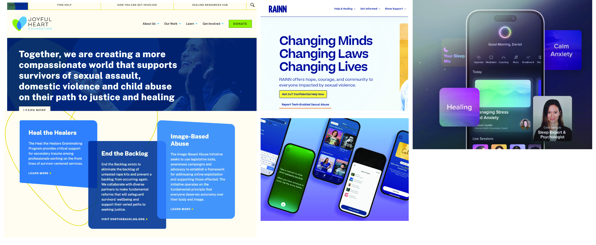
The next phase focused on what the environment should feel like before I determined what it should do. Color and typography were intentionally selected to communicate warmth, quietness, and approachability. I wanted that sense of light to be evident, I referred to sunset, because they always feel so peaceful and calming.
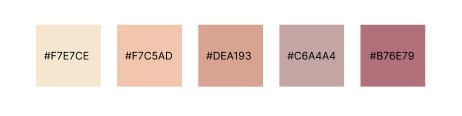
After establishing the overall look of the site I then moved on and identified several emotional objectives:
- Create a sense of calm and safety
- Reduce pressure and expectation
- Encourage exploration rather than task completion
- Foster a feeling of connection without requiring participation
These goals helped establish the direction for both the interface and content strategy.
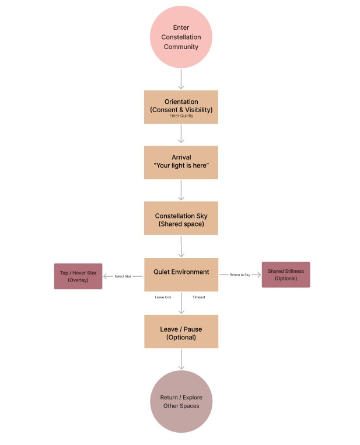
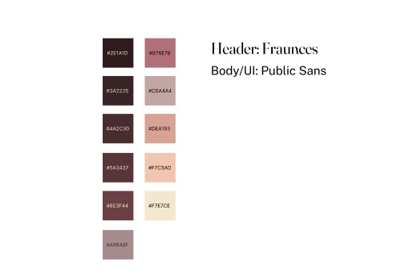
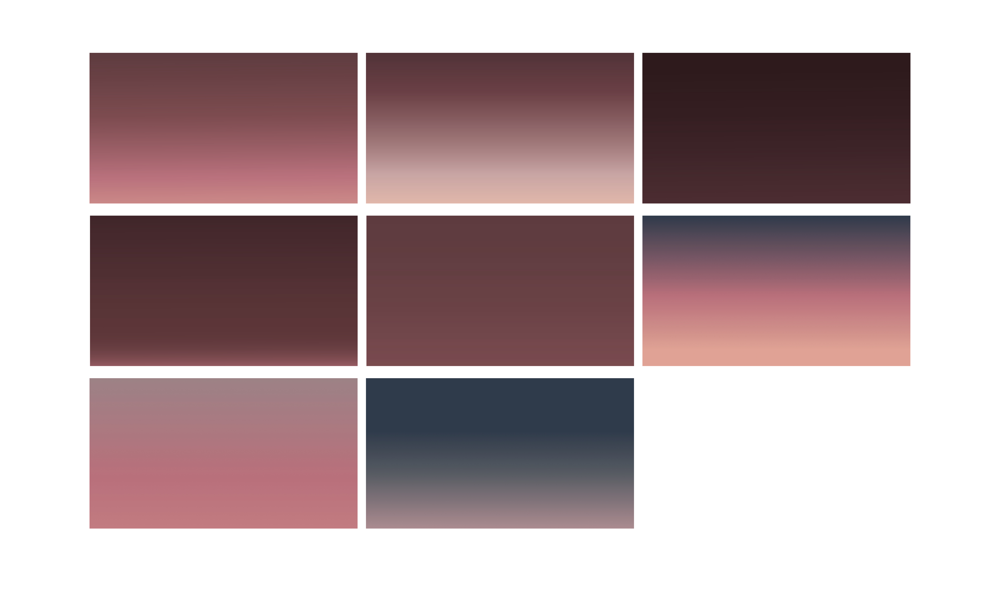
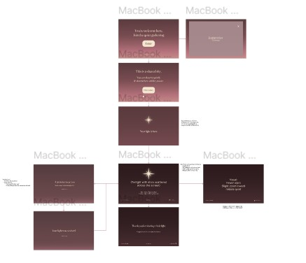
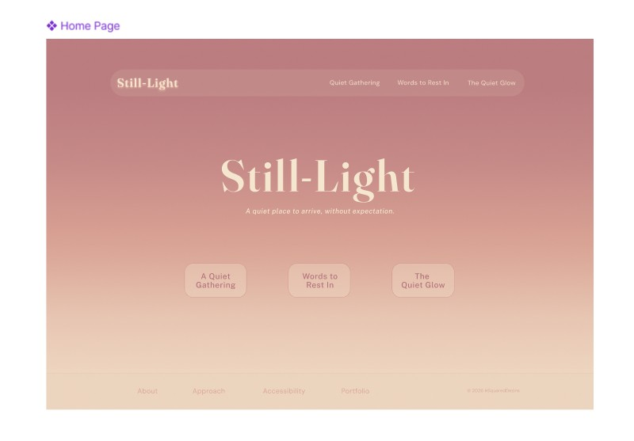
I played around with environment ideas, what could each section of the site offer and what would they look like. I sketched out some rough ideas. Constellation and Breath would both become what are now The Quiet Gathering and The Quiet Glow.
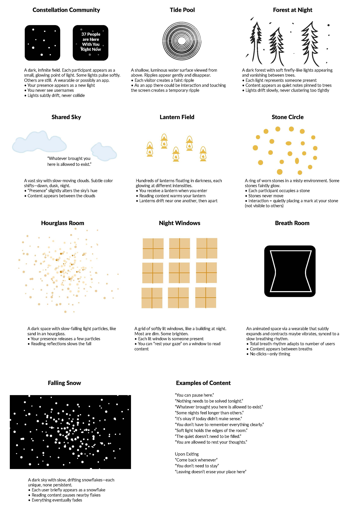
Once I had the visual direction established, I moved onto developing the project.
The site was built using HTML, CSS, JavaScript, React, p5.js, and help from AI, specifically Figma Make and CoPilot, allowing for a more immersive and interactive environment than traditional static web pages. Development involved extensive experimentation with responsive layouts, animated elements, environmental audio, and interactive visual components.
This phase became a balancing act betweent the technical and the emotional intent. It wasn't just about the site functioning properly, but did it give a sense of calm and presence.
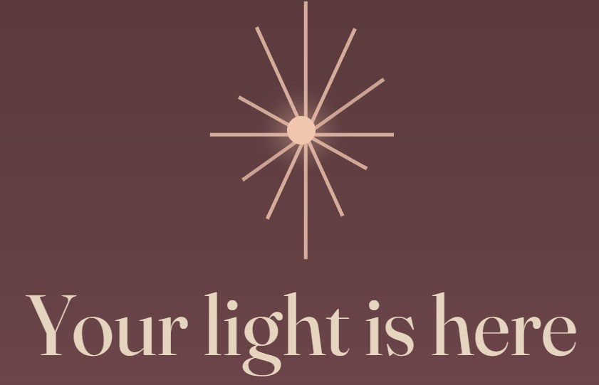
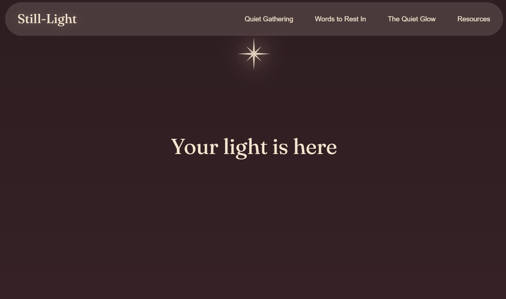
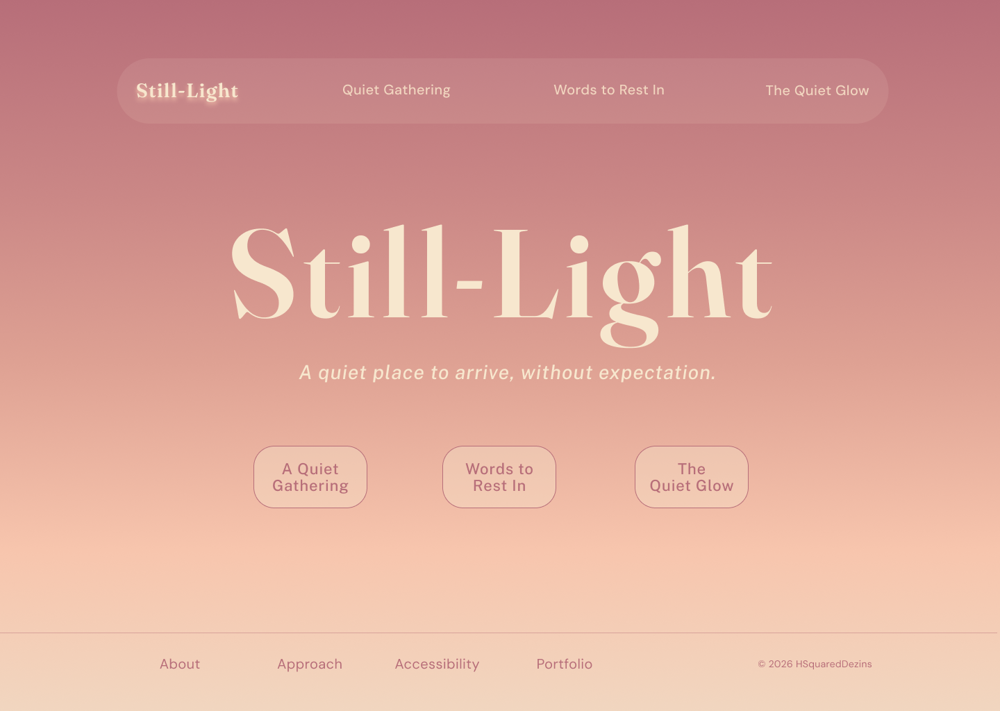
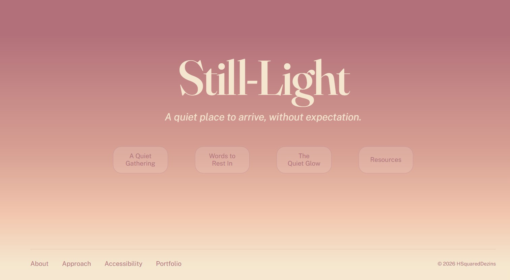
Iteration Through Testing
As prototypes became more refined, feedback helped identify opportunities for improvement. Testing focused on:
- Ease of navigation
- Content clarity
- Emotional response
- Accessibility considerations
- Overall user experience
insert feedback results
What I Learned
Quiet Gathering became more than a website prototype. It demonstrates how design decisions, content strategy, motion, and interaction design can work together to create an emotional experience rather than simply deliver information.
Most importantly, the project revealed that we don’t have to be afraid of white space and that a website doesn’t need to require instruction, solutions, or action to be effective and have an impact. Sometimes the most effective design choice is to create space.
Those lessons directly informed the development of Still-Light, where the concepts first explored in Quiet Gathering evolved into a trauma-informed experience centered on presence, validation, and gentle support.
Deliverables
- Still-Light: A responsive website and working prototype
- Quiet Gathering interactive experience
- Words to Rest In validation experience
- Quiet Glow immersive environment
- Visual identity system (logo, colors, typography)
- Social Media assets
- Digital Banners
- Wireframes, mockups, and design iterations
- User testing materials and findings
- Case study documentation
Summary
Still-Light began as a theoretical question and with time, consideration, and attention to detail became an emotionally safe digital experience grounded in presence, validation an accessibility.
Through research, reflection, writing, visual design, prototyping, and front-end development, I created a collection of interactive experiences that prioritize emotional safety over engagement metrics and support over instruction. Each design decision—from content strategy and navigation to motion and visual atmosphere—was guided by the belief that users should be allowed to participate on their own terms.
The project challenged me to balance empathy with usability, creative vision with technical execution, and personal motivation with professional design practice. It also demonstrated how digital spaces can be designed not only to inform or entertain, but to acknowledge, support, and create room for human experience.
More than a prototype, Still-Light represents my belief that design can be an act of care. It reflects both the designer I have become throughout the MAGWD program and the kind of work I hope to continue creating in the future.
Resources
“What Is Sound Therapy — and Could It Benefit Your Health?” 2025. UCLA Health. October 6, 2025. https://www.uclahealth.org/news/article/what-sound-therapy-and-could-it-benefit-your-health.
“Trauma-Informed Approaches and Programs.” 2026. SAMHSA. February 9, 2026. https://www.samhsa.gov/mental-health/trauma-violence/trauma-informed-approaches-programs.
Chirica, Marianne. 2025. “Trauma-Informed Care: Building Trust, Safety, and Empowerment.” Journal-article. International Journal of Emergency Mental Health and Human Resilience. Vol. 27. https://doi.org/10.4172/1522-4821.1000686.
Legawiec, Megan. 2025. “Trauma-informed Design for UX Content | UX Content Collective.” UX Content Collective | Content Design and UX Writing Courses (blog). August 8, 2025. https://uxcontent.com/a-guide-to-trauma-informed-content-design/.
Carol Scott and Melissa Eggleston. 2024. “Inclusive by Design: Use a Trauma-Informed Approach - User Experience.” User Experience - The Magazine of the UXPA (blog). August 19, 2024. https://uxpamagazine.org/inclusive-by-design-use-a-trauma-informed-approach/.